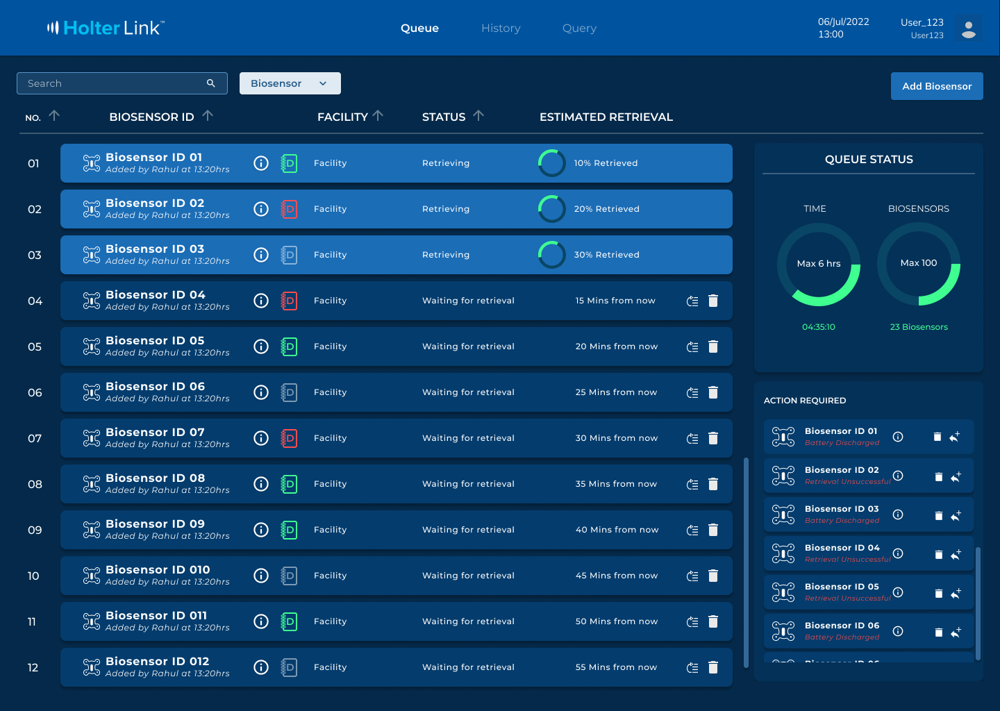
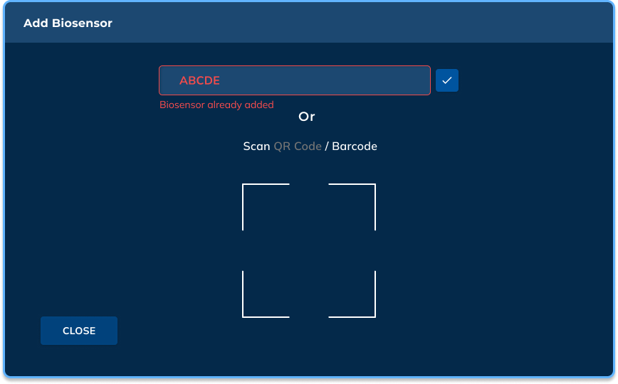
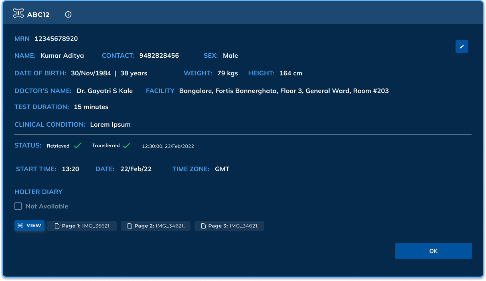
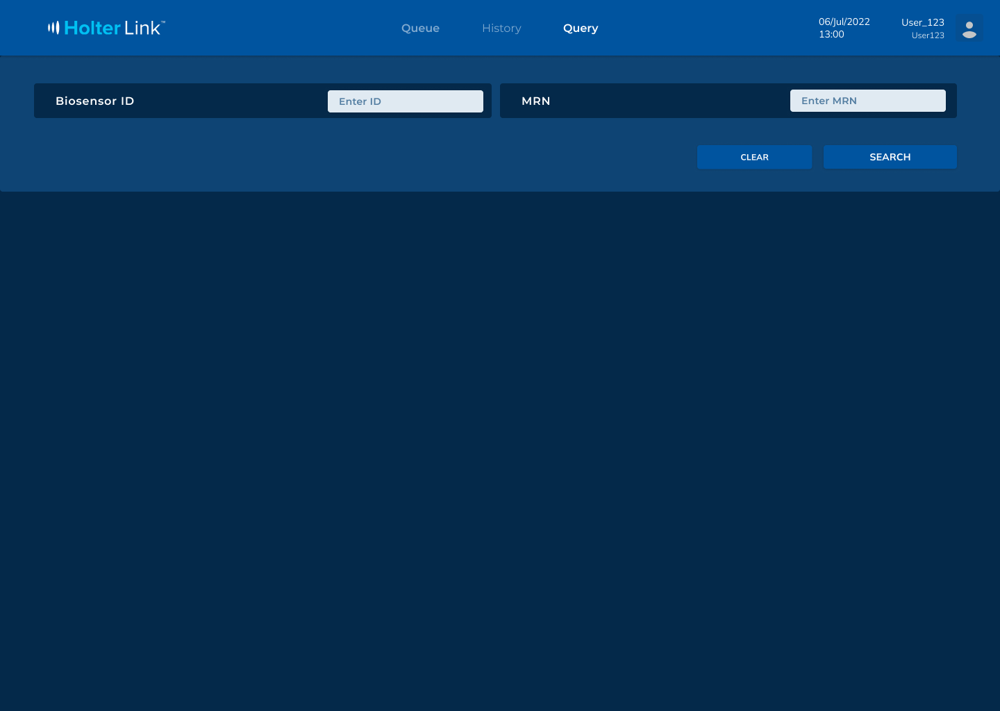
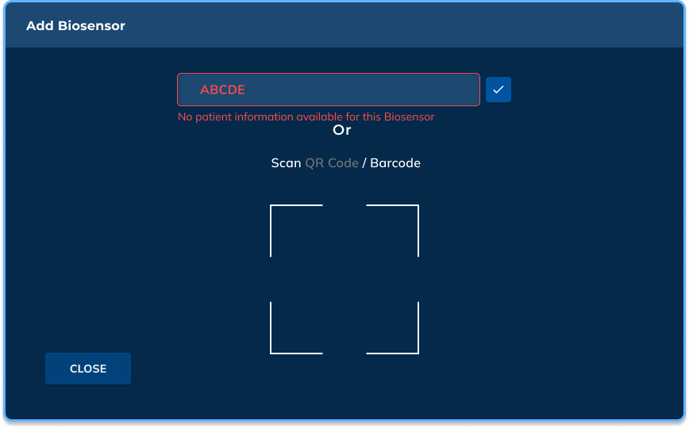
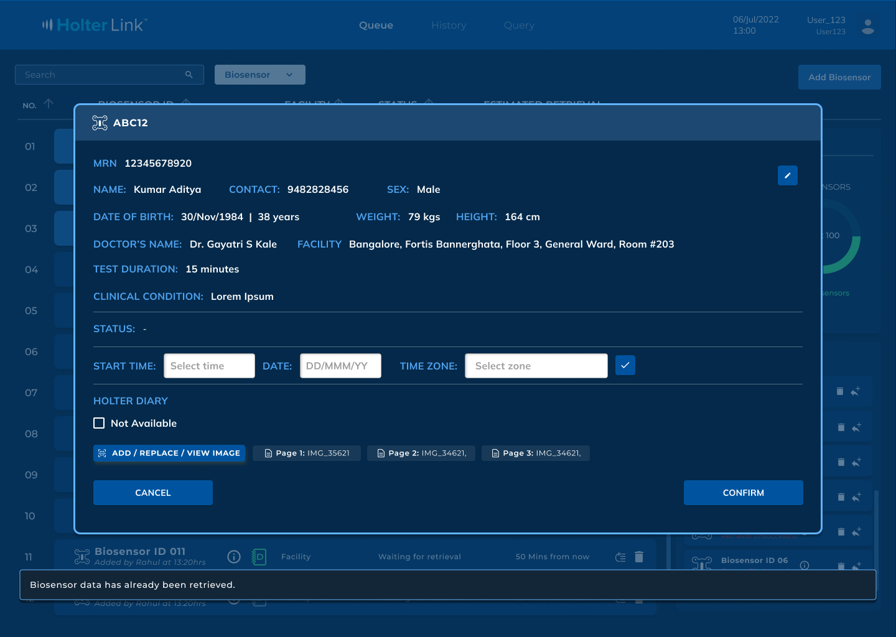
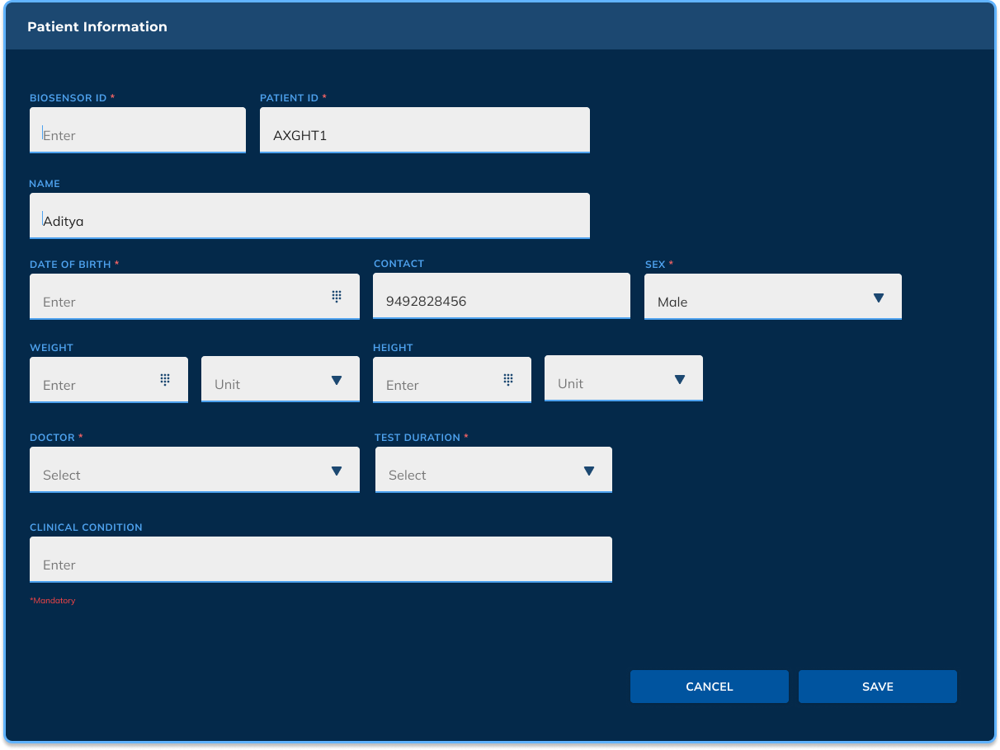
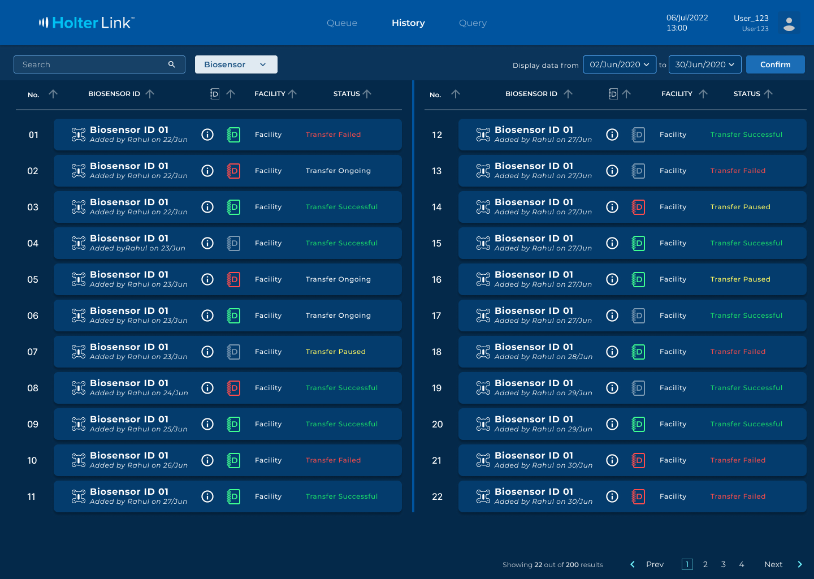

Holter Link
A patient biosensor management tool for clinical staff — tracking cardiac and glucose monitoring devices from assignment through data retrieval.
Introduction
Clinics distribute biosensors to patients to track health data over time — cardiac monitoring through Holter devices, and glucose monitoring for other patients. Each biosensor connects back to a central system, and clinical staff need a reliable way to see every device's status, retrieve the data it's collected, and keep it tied to the right patient record.
Holter Link is the internal tool built for exactly that — letting nurses manage a full queue of biosensors, prioritize urgent retrievals, catch failures early, and keep patient information organized in one place.
Core features

Queue managementLive retrieval tracking
Nurses see every biosensor's status at a glance — retrieving, waiting, or flagged — with a live countdown and drag-to-reprioritize for urgent cases.

Add biosensorManual entry or scan
New devices can be added by typing an ID directly or scanning a QR code / barcode, keeping onboarding fast during a busy shift.

Patient recordEverything in one view
Each biosensor links to a full patient record — vitals, doctor, facility, test duration, and retrieval status — with a Holter Diary for attaching notes or images.

Query searchFind any patient fast
Staff can look up a specific patient by Biosensor ID or MRN directly, without scrolling through the full queue.
Handling failure states
A tool like this only works if staff can trust it when something goes wrong. Every failure state was designed to be caught immediately and explained clearly — not buried in a queue.

Adding a biosensor that's already in the queue, or exceeding the 100-device limit, surfaces a clear inline error instead of failing silently.

On the Queue dashboard, devices that fail — battery discharged, retrieval unsuccessful — are flagged under "Action Required" so nothing gets missed.
Editing patient info & history


Outcome
Holter Link launched across web and mobile and was used by 50+ providers, cutting data-retrieval time by 30% through clearer dashboards and workflows. I ran usability testing with 20+ clinicians, applying accessibility and responsive design improvements that boosted engagement by 20%.
I also built 25+ reusable UI components and an accessible design system in Figma and Adobe XD, which streamlined developer handoff and kept the interface consistent across web, iOS, and Android.